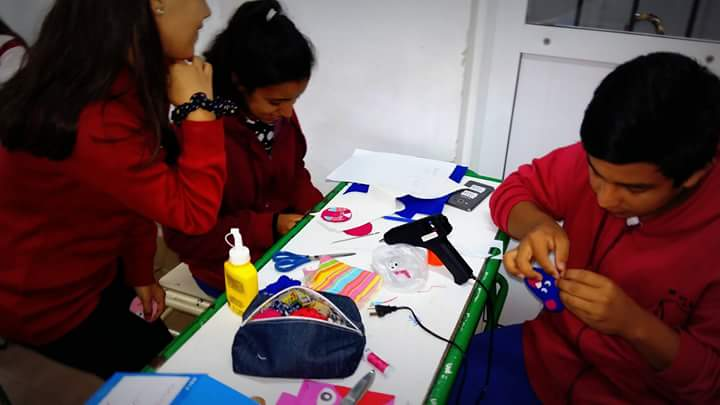

- 


Técnicos en Administración de Empresas
Las habilitaciones profesionales serán tanto en relación de dependencia como en forma autónoma
- Podrá reelevar y sistematizar información generada por las diferentes áreas de la organización
- Relacionar datos de información elaborada en un área proveniente de los demás sectores involucrados, asegurando la coherencia e integridad de la gestión administrativa
- Ejecutar tareas operativas en la administración de las áreas de compras, comercialización, finanzas, recursos humanos y contabilidad de todo tipo de organizaciones
- Auxiliar al/los propietario/s y/o directivo/s mediante el relevamiento, selección y análisis de datos elaborando informes para la toma de decisiones.
- Asistir a los profesionales del área en las actividades incluidas en su perfil profesional.
- Actuar con responsabilidad interrelacionando sus actividades con las que se desarrollan en otras áreas en la organización y evaluando sus efectos sobre la organización en su conjunto.
Propuestas de las Prácticas Profesionalizantes
Son proyectos dados que engloban los contenidos dados en los diferentes campos de formación durante ese año y los anteriores
El 5to año se encargará de
- Kiosko Escolar (Compras, ventas, recursos financieros, registro contable)
El 6to año de la especialidad se encargará de
- Administracion de Cursos de Formación Profesional (Compras, ventas, recursos financieros, registro contable)
El 7mo año de la especialidad se encargará de
- Pasantías, emprendimientos personales/grupales